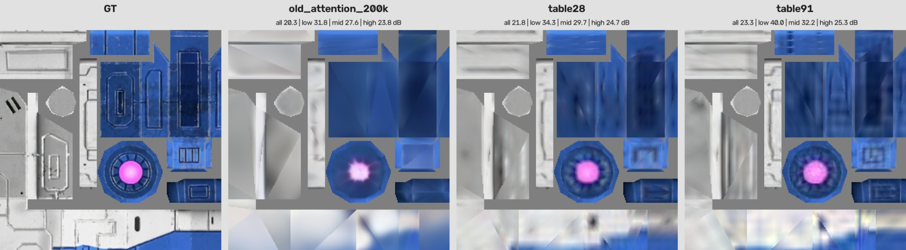
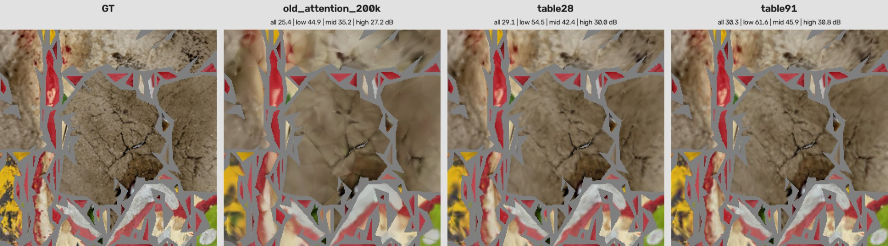

03 / 演示
同一个 mesh，四个模型
共享相机的交互式对比：GT albedo、表 latent 91 点、5 通道 PBR VAE 300k、TRELLIS.2 纹理 VAE，都映射回原始 mesh 渲染（无光照）。拖动旋转、滚轮缩放；“单视图”可以放大看一个模型。
Rippersnapper 1aac7b79

加载中…
GT albedo表 latent 91 点C5VAE 300k（5 通道）TRELLIS.2 纹理 VAE
拖动旋转 · 滚轮缩放
救护车 994aec41

加载中…
GT albedo表 latent 91 点C5VAE 300k（5 通道）TRELLIS.2 纹理 VAE
拖动旋转 · 滚轮缩放
细节裁剪：latent 结构决定了面内细节

